STARTING/CHARGING SYSTEMS(H4SO) > Generator
1. Remove the four through-bolts.
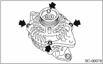
2. Use a drier to heat the rear cover (A) portion to 50°C (122°F).
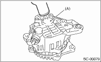
3. Insert the end of a flat tip screwdriver into the gap between stator core and front cover. Pry these apart to disassemble.
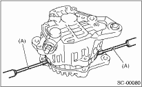
|
(A) |
Screwdriver |
4. Using a vise, support the rotor and remove the pulley nut.
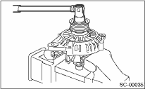
CAUTION:
When holding the rotor with a vise, place aluminum plates or wooden pieces on the vise jaws to protect the rotor from damage.
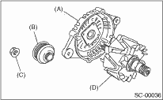
|
(A) |
Front cover |
|
(B) |
Pulley |
|
(C) |
Nut |
|
(D) |
Rotor |
5. Use the following procedures to remove the ball bearings.
(1) Remove the bolt, and then detach the bearing retainer.
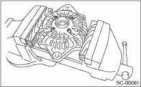
(2) Firmly attach an appropriate tool (such as a correct size socket wrench) to the bearing inner race.
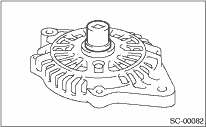
(3) Use the press to push the ball bearings out from the front cover.
6. Using the bearing puller, remove the bearings from the rotor.
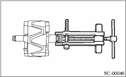
7. Disconnect the connection between the rectifier and stator coil, then remove the stator coil.
CAUTION:
The rectifier is easily damaged by heat. Do not allow a 180 — 270 W soldering iron to contact the terminals for more than 5 seconds at a time.
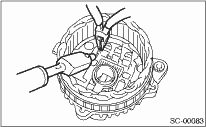
8. Use the following procedures to remove the IC regulator.
(1) Remove the screws which secure the IC regulator to the rear cover.
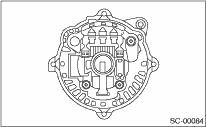
(2) Disconnect the connection between the IC regulator and rectifier, then remove the IC regulator.
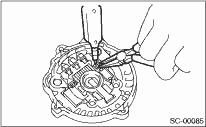
9. Use the following procedures to remove the brush.
(1) Remove the cover A.
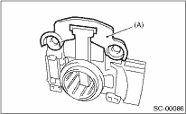
|
(A) |
Cover A |
(2) Remove the cover B.
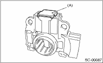
|
(A) |
Cover B |
(3) Disconnect the connection and remove the brush.
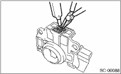
10. Use the following procedures to remove the rectifier.
(1) Remove the bolts which secure the rectifier.
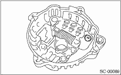
(2) Remove the cover on terminal B.
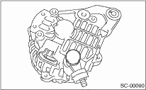
(3) Remove the nuts of terminal B, then remove the rectifier.
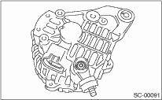